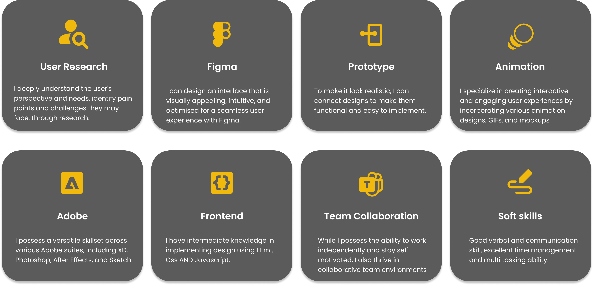

Hi! I'm Hafsoh Omolola
Email: hafsoh@example.com
Phone: (314) 646 9976
Location: St-Louis, Missouri, United States
About Me
As a passionate UI/UX designer, I bring close to 4 years of experience in crafting exceptional digital products. With a keen eye for detail and a deep understanding of user-centric design principles, I have successfully collaborated on numerous projects, delivering impactful and engaging user experiences. I am excited to continue pushing the boundaries of design and delivering exceptional products that enhance user satisfaction and drive business success.
My expertise lies in creating intuitive and visually appealing interfaces that seamlessly blend aesthetics with functionality. I am well-versed in conducting user research, crafting wireframes and prototypes, and implementing user testing to validate design decisions.
My Passion
Design is not just a profession for me; it's a true passion. The ability to create meaningful and impactful experiences through design is what drives me forward. I am deeply fascinated by the power of design to shape and enhance the way people interact with technology and the world around them.
Design allows me to blend my creativity and problem-solving skills to find innovative solutions. I am passionate about understanding the needs and desires of users and translating them into intuitive and delightful experiences. The opportunity to create designs that not only look visually appealing but also provide seamless functionality is what excites me the most.
Education
Alt School of Engineering ( South Africa ).
Diploma in Software Engineer | 2022-2023.
Olabisi Onabanjo University.
Bachelors Degree In Law | 2013-2018.
My Certifications
The interaction design Foundation UK : Practical guide to Usability | 2022.
Zuri ( Frontend Developemet ) | 2022.
KodeCamp ( UI/UX Design ) | 2021.
Fasaha 4.0 ( UI/UX Design ) | 2021.
The Interaction Design Foundation UK ( UI Design ) | 2021.
Visiola Foundation Bootcamp ( UI/UX Design ) | 2020.

Awards & Recognition
- Recipient of the Zuri Competition's Best Design Team Lead Award.
- Commendation letter for hard work at Equi-Trust.
My Transitioning Journey
Embarking on a transformative journey, I made a bold decision to transition from the field of law to the captivating realm of UI/UX design. Driven by a deep passion for creativity and problem-solving, I sought to explore new avenues where I could leverage my skills and make a meaningful impact. With unwavering determination, I immersed myself in the world of design, dedicating countless hours to learning and mastering the principles and tools of UI/UX. Through rigorous self-study, online courses, and hands-on projects, I honed my skills and gradually transformed my career path. Today, as a UI/UX designer, I bring a unique blend of analytical thinking, attention to detail, and a keen eye for aesthetics, allowing me to create exceptional digital experiences that resonate with users and make a positive impact on their lives.
Transitioning from Law to UI/UX Design: Blending Expertise and Perspective.
Drawing upon my background in law, I bring a unique set of skills and perspectives to the field of UI/UX design. Just as in law, attention to detail, critical thinking, and effective communication are crucial in creating successful user experiences. The analytical mindset cultivated through legal practice enables me to approach design challenges with a strategic and problem-solving mindset.
My Experience
Additionally, my experience in law has honed my ability to understand complex systems and regulations, allowing me to design interfaces that comply with legal requirements and ensure a seamless user experience. Moreover, my legal training has instilled in me a deep appreciation for empathy and understanding, which I apply in crafting user-centered designs that cater to the needs and aspirations of diverse audiences.
By blending my legal expertise with design principles, I strive to create intuitive and accessible interfaces that not only meet legal standards but also provide a delightful and engaging user experience.
Expertise
Unlocking Value: How I Enhance Your Team
In joining your team, I bring a unique set of skills and experiences that will contribute to its success. With a background in UI/UX design and a transition from the field of law, I offer a fresh perspective and a diverse range of abilities.
As a team member, I strive to collaborate effectively, contribute innovative ideas, and deliver high-quality results that exceed expectations. Together, we can unlock new possibilities and drive your team towards success.
Let's Connect and Transform Your Product into a Business Goal !
@2023 Hafsoh Omotosho-Adeniran | Designed & Developed by Hafsoh Omotosho Legal Designer | Hafsohomotosho@gmail.com